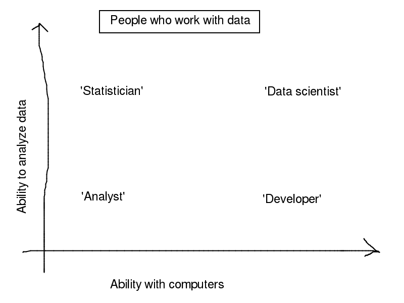

I think that ‘big data’ and ‘data science’ are usually defined such that the person defining the term is using it.
But these terms do seem to be somewhat meaningful sometimes. I’ve been at loads of hip and non-hip data talks here and there and have come up with some ideas what people mean when they use these terms. In the current post, I seek to describe how the terms ‘big data’ and ‘data science’ are used these days.
‘Big data’
When people describe something as ‘big data’, the thing is usually physically big (in bytes). So a petabyte of data would might be big data, at least today.
Other people propose thresholds, like when the data don’t fit in random-access memory or when the data don’t fit on one computer. (Some talk at Strata NY 2011 used this one.) More generally, we might say that data are ‘big’ when they don’t physically fit the world’s standard data analysis tool, Excel. When this happens, you need to know something more about computers in order to store and analyze the data.
Judging data-bigness by physical size works today, but the size that seems big today is different from what seemed big twenty years ago and from what will seem big in twenty years. I present below two descriptions of big data that get to the causes of data-bigness.
Some guy at Strata London 2012 proposed that big data come about when it becomes less expensive to store data than it is to decide whether to delete the data. We’ve recently moved from filing cabinets and libraries all the way to Hadoop clusters and low-power hard drives, so it recently has become reasonable to just save anything.
Where do all of these data come from? I think part of this big data thing is that the data are collected more automatically than they were before. Before computers, if the post office wanted to study where mail is sent, I guess it could sample letters at various points within the postal system and find their destinations, return addresses and route through the postal system. There might be tools to assist this data collection, but someone would still have to take part in the data collection. Today, we already have all of our emails, Twitter posts and other internet presense in reasonably standard digital formats, so this process is much more automatic. I thus propose that automation of data collection is part of the big data thing.
‘Data science’
What is ‘data science’? It broadly seems to be some combination of ‘statistics’ and ‘computer engineering’. They’re in quotes because they’re all stupidly ambiguous and because I don’t feel like defining them except in relation to each-other.
I’ll define ‘data science’ by relating it to ‘statistics’ and to ‘software engineering’. Let’s start with the comparison with ‘statistics’.
‘Data science’ and ‘statistics’
The statistical methods used in ‘data science’ and ‘big data’ seem quite unsophisticated compared to those used in ‘statistics’.
Often, it’s just search. For example, the data team at La Nación showed me how they’re acquiring loads of documents and allowing journalists to search them. I’m sure that they’ll eventually start doing crude quantitative analyses on the overall document sets, but even the search has already been valuable. Their team is, of course ‘data journalism’,
The quantitative analyses that do happen are often quite simple. Consider the FourSquare checkin analyses that a couple people from FourSquare showed at DataGotham. It was mostly scatterplots of checkins on top of a map and sometimes played over time. They touched on the models they were using to guess the location to which someone wanted to check in, but the main points of their talks were the knowledge that we gain by looking at checkin histories, and these simple plots were more helpful for conveying this.
In other cases, ‘data science’ simply implies ‘machine learning’. Compared to ‘statistics’, I think ‘machine learning’ just implies a focus on prediction rather than inference.
The ‘statistics’ fields seem to do more complex models on simpler datasets, and these ‘data’ fields are more concerned with consuming and practically applying gobs of data than they are about modeling the data.
‘Data science’ and ‘software engineering’
The products of ‘software engineering’ tend to be tools, and the products of ‘data science’ tend to be knowledge. I’ve broken that distinction into some technical components. Nota bene: These components exaggerate the differences.
Realtime v. batch: If something is ‘realtime’, it is the result of ‘software engineering’; ‘data science’ is always batch. (Let’s avoid worrying too much about what ‘realtime’ means. I happen to take ‘realtime’ to mean push rather than pull, but this claim should work for any reasonable definition of ‘realtime’.)
Organization: ‘Data scientists’ are embedded within organizations that have questions about data (typically about their own data, though that depends on how we think of ownership). Consider any hip web startup with a large database. ‘Software engineers’, on the other hand, make products to be used by other organizations or by other departments within a large organization. Consider any hip web startup ever. Also consider some teams within large companies; I know someone who worked at Google as a ‘software engineer’ to write code for packaging ChromeBooks.
What about ‘analysts’?
If we simplify the world to a two-dimensional space, ‘data scientists’, ‘statisticians’, ‘software engineers’ and ‘engineers’ might land here.

Conflating ‘data science’ and ‘big data’
Some people conflate ‘data science’ and ‘big data’. For some definitions of these two phrases, the conflation makes perfect sense, like when ‘big data’ means that the data are big enough that you need to know something about computers.
Some people are more concerned with ‘data science’ than they are with ‘big data’, and vice-versa. For example, ‘big data’ is much talked-about at Strata, but ‘data science’ isn’t discussed as much. I sort of think that ‘big data’ is buzzier and more popular among the marketing departments.
On the other hand, ‘data science’ is more common among people I hang out with, and we don’t seem to talk about ‘big data’ very much. Part of this is that we can do useful things with small datasets too. But I feel like we don’t talk about ‘big data’ even when a dataset gets large. It might be that we want some word to describe what we do. ‘Statistician’ and ‘computer stuff’ aren’t close enough, but ‘data scientist’ is decent.
Utility of these definitions
Consider taking everything I said with a grain of salt. First, most of my knowledge of how companies work is second-hand. Second, in order to explain these vague differences, I used examples that may have made the differences seem more clear than they are.
On the other hand, I intended for these definitions to be descriptive rather than prescriptive, so they might be more useful than some other definitions that you’ve heard.